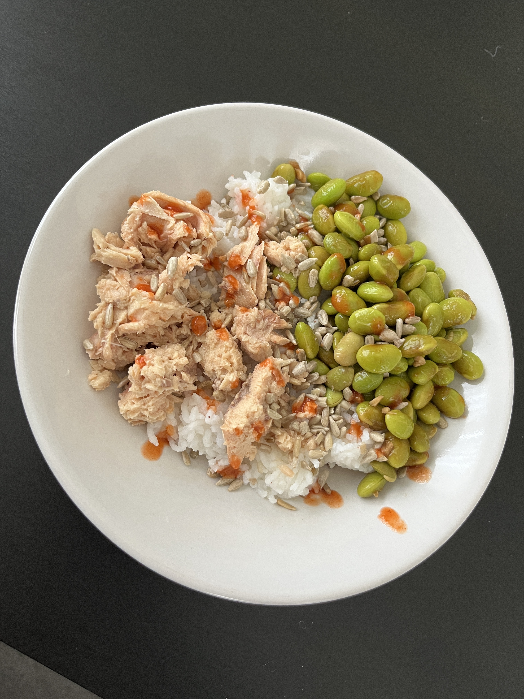

Salmon & Edamame

Description:
A simple omega3, protein rich and high fiber meal, perfect as lunch or dinner.
Ingredients:
- 130g salmon (fresh or canned)
- 100g edamame
- 50g basmati rice
- 1-2 cloves garlic
- 2 tbsp. soy sauce
- 1 tbsp. apple vinegar
- 1 tsp. honey
- 1 tsp. chilli sauce (optional)
Steps:
- Salt the salmon and cook it for 10min. if fresh
- Prepare a sauce in a cup - soy sauce, vinegar, honey, chilli and garlic
- Cook the edamame in the sauce for 1-2min.
- Cook the rice aside for 10-12min. (optional: rice is better for gut health when cooked, refrigerated afterwards)
- Serve and top it with nuts or seeds of choice and add extra chilli sauce if wanted
Home